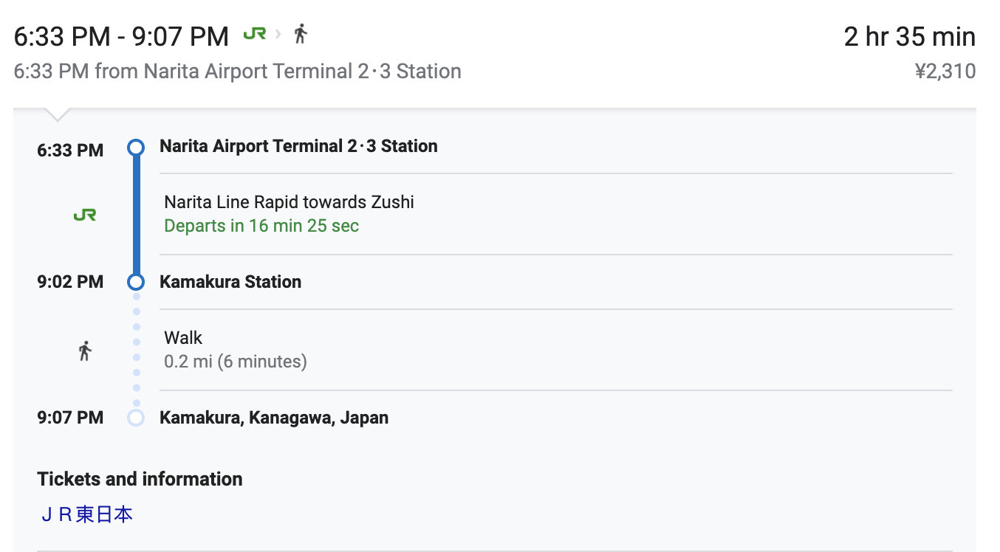

From Narita Airport, you can take Narita Line Rapid towards Zushi by Japan Railways (JR) to Kamakura Station.
From Haneda, take the Keikyu Limousine Bus to Yokohama Station. Then take the Yokosuka Line or Shonan Shinjuku Laine from Yokohama Station to Kamakura Station.